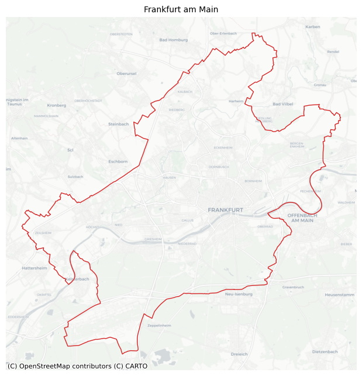
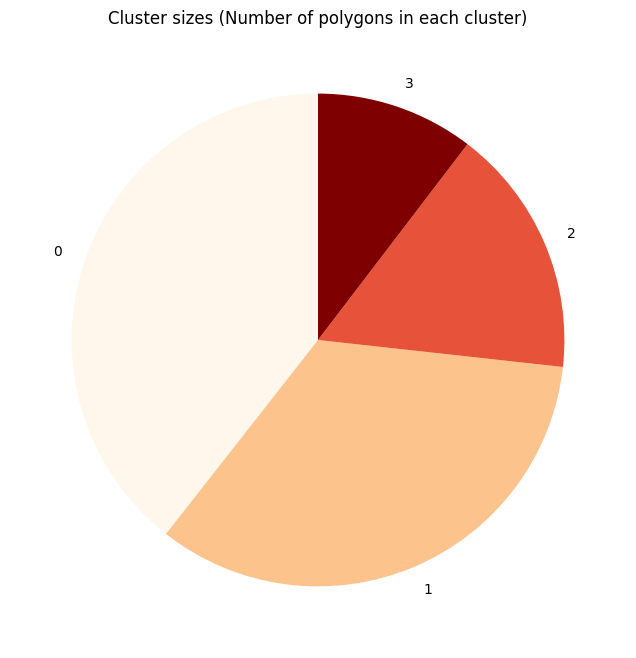
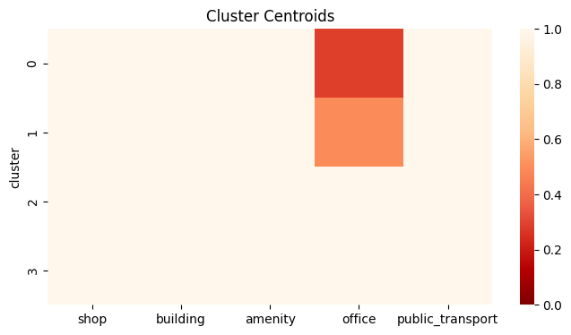

Clustering Urban Areas¶
This notebook shows how tessellation can be used to generate clustering units in order to segment urban areas.
[1]:
import numpy as np
import pandas as pd
import matplotlib.pyplot as plt
import seaborn as sns
plt.rcParams["figure.dpi"] = 100
plt.rcParams["figure.figsize"] = (8, 8)
import geopandas as gpd
from shapely.geometry import Point
import contextily as ctx
[2]:
from sklearn.cluster import KMeans
from sklearn.preprocessing import MinMaxScaler
[3]:
from tesspy import Tessellation
Area¶
We use Frankfurt am Main in Germany as a case study. First, we get the city boundary.
[4]:
ffm = Tessellation("Frankfurt am Main")
ffm_polygon = ffm.get_polygon()
[5]:
# visualization of area
ax = ffm_polygon.to_crs("EPSG:3857").plot(facecolor="none", edgecolor="tab:red", lw=1)
ctx.add_basemap(ax=ax, source=ctx.providers.CartoDB.Positron)
ax.set_axis_off()
ax.set_title("Frankfurt am Main", fontsize=10)
plt.show()

Tessellation¶
We tessellate the area using Voronoi Diagrams.
[6]:
poi_categories = ["shop", "building", "amenity", "office", "public_transport"]
# voronoi Diagrams
ffm_voronoi_kmeans = ffm.voronoi(poi_categories=poi_categories, n_polygons=1000)
2026-02-22 16:26:48 | INFO | tesspy.tessellation | event=voronoi.start cluster_algo=k-means poi_categories=5 n_polygons=1000 min_cluster_size=15 timeout_s=300
2026-02-22 16:26:48 | INFO | tesspy.data.poi | event=poi.fetch.start poi_categories=5 timeout_s=300
2026-02-22 16:44:53 | INFO | tesspy.data.poi | event=poi.fetch.done features=164331 duration_s=438.215
/Users/siavash.saki/Personal/tesspy/tesspy/data/poi.py:118: UserWarning: Geometry is in a geographic CRS. Results from 'centroid' are likely incorrect. Use 'GeoSeries.to_crs()' to re-project geometries to a projected CRS before this operation.
centroids = gdf.geometry.centroid
2026-02-22 16:44:54 | INFO | tesspy.data.poi | event=poi.parse.done poi_count=164331
2026-02-22 16:44:56 | INFO | tesspy.tessellation | event=voronoi.cluster.start algo=kmeans
2026-02-22 16:45:02 | INFO | tesspy.tessellation | event=voronoi.polygons.create generators=1000
2026-02-22 16:45:02 | INFO | tesspy._validators | event=geometry.multipolygon.explode
2026-02-22 16:45:02 | INFO | tesspy.tessellation | event=voronoi.done polygons=1002 duration_s=447.148
[7]:
# adding an ID to tiles
ffm_voronoi_kmeans.reset_index(inplace=True)
ffm_voronoi_kmeans.rename(columns={"index": "tile_id"}, inplace=True)
# check polygons
ffm_voronoi_kmeans.tail()
[7]:
| tile_id | voronoi_id | geometry | |
|---|---|---|---|
| 997 | 997 | voronoiID997 | POLYGON ((8.69789 50.09346, 8.6966 50.09023, 8... |
| 998 | 998 | voronoiID998 | POLYGON ((8.72927 50.08946, 8.72217 50.08244, ... |
| 999 | 999 | voronoiID999 | POLYGON ((8.62277 50.11096, 8.61704 50.11149, ... |
| 1000 | 1000 | voronoiID1000 | POLYGON ((8.6668 50.19889, 8.66502 50.19997, 8... |
| 1001 | 1001 | voronoiID1001 | POLYGON ((8.6919 50.13976, 8.6934 50.13511, 8.... |
[8]:
ax = ffm_voronoi_kmeans.to_crs("EPSG:3857").plot(
facecolor="none", edgecolor="k", lw=0.5
)
ffm_polygon.to_crs("EPSG:3857").plot(ax=ax, facecolor="none", edgecolor="tab:red", lw=1)
ctx.add_basemap(ax=ax, source=ctx.providers.CartoDB.Positron)
ax.set_axis_off()
ax.set_title("Voronoi Tessellation", fontsize=15)
plt.show()

Data Processing¶
We create count variables. For each polygon (tile), the number of each POI category is calculated.
[9]:
# create a GeoDataFrame of POI data
poi_df = ffm.get_poi_data()
poi_geodata = gpd.GeoDataFrame(
data=poi_df,
geometry=poi_df[["center_longitude", "center_latitude"]]
.apply(Point, axis=1)
.values,
crs="EPSG:4326",
)
[10]:
poi_geodata.head()
[10]:
| center_longitude | center_latitude | shop | building | amenity | office | public_transport | geometry | |
|---|---|---|---|---|---|---|---|---|
| 0 | 8.568829 | 50.122765 | False | False | False | False | True | POINT (8.56883 50.12277) |
| 1 | 8.633793 | 50.153205 | False | False | False | False | True | POINT (8.63379 50.1532) |
| 2 | 8.609222 | 50.106639 | False | False | False | False | True | POINT (8.60922 50.10664) |
| 3 | 8.620979 | 50.107860 | False | False | False | False | True | POINT (8.62098 50.10786) |
| 4 | 8.604924 | 50.108962 | False | False | False | False | True | POINT (8.60492 50.10896) |
[11]:
# Count POI
poi_counts = gpd.sjoin(
ffm_voronoi_kmeans, poi_geodata, how="left", predicate="contains"
)
poi_counts[poi_categories] = poi_counts[poi_categories].map(
lambda x: np.nan if not x else x
)
poi_counts = poi_counts.groupby(by="tile_id").count().reset_index()
poi_counts.head()
[11]:
| tile_id | voronoi_id | geometry | index_right | center_longitude | center_latitude | shop | building | amenity | office | public_transport | |
|---|---|---|---|---|---|---|---|---|---|---|---|
| 0 | 0 | 117 | 117 | 117 | 117 | 117 | 8 | 79 | 18 | 0 | 12 |
| 1 | 1 | 230 | 230 | 230 | 230 | 230 | 2 | 150 | 69 | 5 | 12 |
| 2 | 2 | 343 | 343 | 343 | 343 | 343 | 10 | 183 | 142 | 1 | 9 |
| 3 | 3 | 275 | 275 | 275 | 275 | 275 | 0 | 273 | 2 | 1 | 0 |
| 4 | 4 | 247 | 247 | 247 | 247 | 247 | 1 | 234 | 8 | 0 | 6 |
[12]:
fig, ax = plt.subplots(figsize=(5, 3))
poi_counts["index_right"].plot(
kind="hist", bins=50, ax=ax, lw=0.1, edgecolor="white", zorder=3
)
ax.set_title("All POI count")
ax.set_xlabel("POI count per polygon")
ax.set_ylabel("Polygons count")
ax.grid(axis="y", lw=0.3, ls="--", zorder=0)

We normalize the data using MinMaxScaler.
[13]:
data = poi_counts[poi_categories].values
data_norm = MinMaxScaler().fit_transform(data)
Clustering¶
K-Means is used for clustering polygons.
[14]:
kmc = KMeans(n_clusters=4, random_state=0).fit(data_norm)
[15]:
clustering_results = gpd.GeoDataFrame(
geometry=ffm_voronoi_kmeans["geometry"], data=poi_counts[poi_categories]
)
clustering_results["cluster"] = kmc.labels_
# pretiffy the results
dct_ = dict(
zip(
clustering_results.groupby("cluster")
.count()
.sort_values("geometry", ascending=False)
.index,
clustering_results.groupby("cluster").count().index,
)
)
def sort_class_labels(i, dct):
return dct[i]
clustering_results["cluster"] = clustering_results["cluster"].apply(
lambda x: sort_class_labels(x, dct_)
)
Results¶
[16]:
fig, ax = plt.subplots()
ax.set_axis_off()
clustering_results.plot(
column="cluster",
categorical=True,
cmap="OrRd",
linewidth=0.1,
edgecolor="k",
legend=True,
ax=ax,
)
ax.set_title(f"Frankfurt: Clustering Results")
plt.show()

[17]:
from matplotlib import cm
cs = cm.OrRd(np.linspace(0, 1, 4))
fig, ax = plt.subplots()
labels = clustering_results["cluster"].value_counts().index
sizes = clustering_results["cluster"].value_counts().values
ax.pie(sizes, labels=labels, startangle=90, colors=cs)
ax.set_title(f"Cluster sizes (Number of polygons in each cluster)")
plt.show()

[18]:
cluster_centroids = clustering_results.groupby("cluster").mean(numeric_only=True)
fig, ax = plt.subplots(figsize=(8, 4))
sns.heatmap(cluster_centroids, ax=ax, cmap="OrRd_r", vmin=0, vmax=1)
ax.set_title(f"Cluster Centroids")
plt.show()
